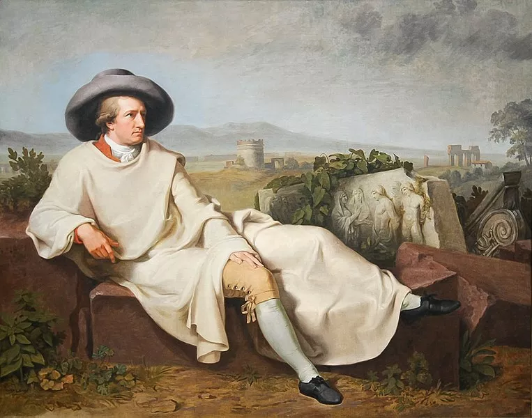
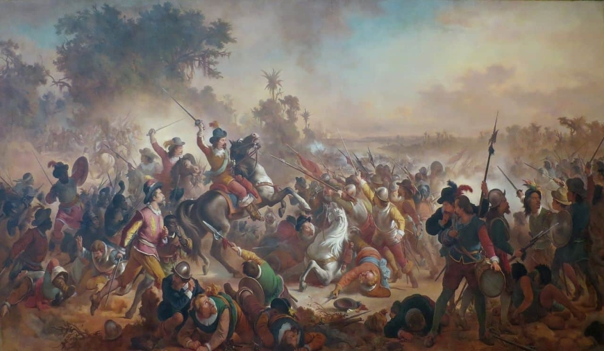
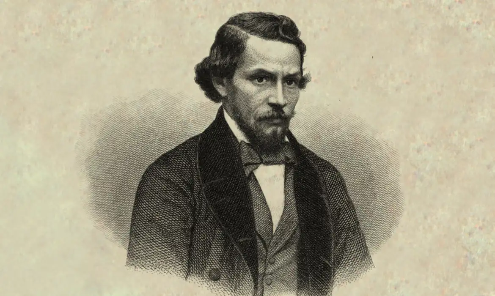
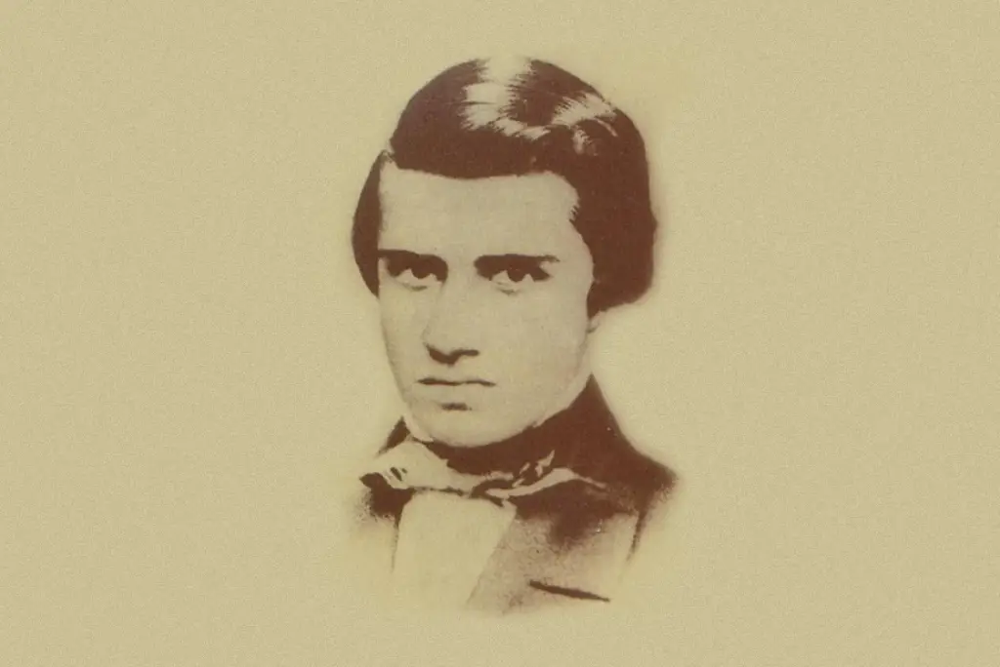
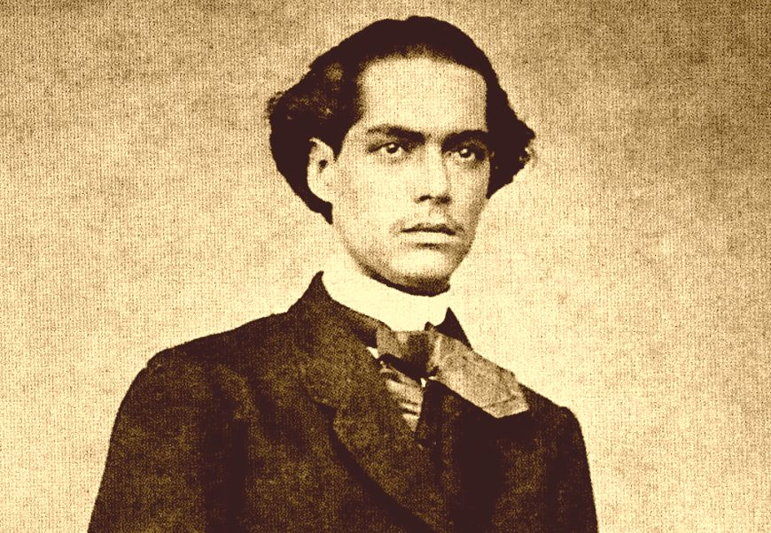

O que é o Romantismo?
O Romantismo foi um movimento cultural e artístico que surgiu na Europa no final do século XVIII durante a época da revolução industrial, começando no Brasil a partir do século XIX, após a declaração de independência. Movimento esse que serviu como forma de expressão da burguesia, a qual recentemente havia ascendido e dominado o cenário político mundial, consequência da Revolução Francesa e ideais iluministas.
Contexto histórico europeu
O movimento iluminista tomava força na Europa, e portanto, a burguesia também. Foi a partir de eventos históricos como a Revolução Francesa, que a burguesia, com os valores iluministas e ideologia liberal totalmente contrária ao absolutismo, tomou o lugar das monarquias absolutistas por todo o continente Europeu. Tornando-se agora a classe social dominante, o Romantismo surge como forma de arte dos mesmos, expressando novos valores sociais, éticos e morais.
Conforme o exército de Napoleão aterrorizava e invadia países, foi despertado o sentimento de nacionalismo, posteriormente considerado uma característica forte do Romantismo, levando a produção da primeira obra literária romântica, nomeada Os sofrimentos do jovem Werther e escrita pelo alemão Johann Wolfgang von Goethe.
Essa nova forma de arte espalhou-se rapidamente por todo o continente, influenciando vários campos artísticos, como a literatura, pintura, escultura, arquitetura e música.

Contexto histórico brasileiro
Agora com foco no Brasil, o principal acontecimento que semeou o Romantismo no país foi a chegada da Família Real portuguesa, fugida da ameaça de invasão pelas tropas de Napoleão. Nesse período, movimentos revolucionários como a Inconfidência Mineira só adicionavam lenha na fogueira, que iria culminar na revogação oficial da colonização exploratória do país, e na transformação do mesmo em sede do Reino Unido de Portugal, Brasil e Algarves.
Nesse contexto, a nacionalização se tornou característica muito forte no país e consequentemente no movimento cultural local, desencadeando na busca por um herói nacional. Foi eleito como heroi o índigena, visto que o branco era um colonizador europeu, e os negros, escravos, considerando o índio como legítimo representante americano, representando braveza e honra.
O marco inicial em relação às obras foi a publicação de Suspiros Poéticos e Saudades, escrito por Gonçalves de Magalhães, em 1836. Logo após, vários autores se tornaram notáveis e escreveram obras marcantes para a literatura brasileira, sendo alguns deles: Álvares de Azevedo, que escreveu Lira dos Vinte Anos, Casimiro de Abreu que escreveu Primaveras, Castro Alves que escreveu Os Escravos, e José de Alencar, que escreveu O guarani.

Características do Romantismo
O movimento é marcado por sentimentalismo e a expressão de emoções de forma exacerbada, valorizando a liberdade de escrever sobre, com seus autores muitas das vezes também expressando sentimentos nacionalistas, enaltecendo a pátria e a natureza.
No Romantismo, como preza por valores burgueses, o teocentrismo volta a predominar, enaltecendo a fé e a coragem. Há também a idealização do amor e da mulher, além da fuga da realidade. A corrente artística e cultural faz forte oposição ao Classicismo, ao transformar a arte que antes era algo nobre em algo que enaltece o nacionalismo e que agora é mais acessível.
Os textos românticos eram escritos em prosa, abandonando padrões estéticos rígidos, tornando-se uma literatura acessível, ainda mais por meio dos folhetins, no Brasil. De forma geral, podemos citar as características do Romantismo, resumidamente, como:
• Nacionalismo
• Busca por um heroi nacional
• Exaltação da natureza
• Teocentrismo
• Idealização do amor e da mulher
• Fuga da realidade
• Valores burgueses
• Oposição ao Classicismo
• Texto em prosa e sem métrica
• Supervalorização de emoções
• Exaltação do sentimento de liberdade
Romantismo brasileiro
O Romantismo brasileiro destacou-se pela valorização das emoções, do individualismo e do nacionalismo. Os escritores românticos exploravam os conflitos do amor, a exuberância da natureza brasileira e os ideais de liberdade pessoal.
Autores como José de Alencar, com suas obras "Iracema" e "O Guarani", e Álvares de Azevedo, com "Noite na Taverna", foram figuras proeminentes deste movimento. Gonçalves Dias, através de sua "Canção do Exílio", também contribuiu significativamente para o Romantismo brasileiro.
O movimento surgiu em um momento de transformação política e social após a Independência do Brasil. A busca por uma identidade nacional unificada era uma preocupação central, refletida nas obras dos artistas românticos.
Foi influenciado por movimentos literários europeus, como o romantismo inglês e a literatura germânica. Além disso, incorporou elementos da cultura indígena e africana, enriquecendo sua expressão artística. Ademais, deixou um legado duradouro na cultura brasileira, influenciando não apenas a literatura, mas também a música, as artes visuais e o pensamento social. Suas ideias continuam a inspirar artistas e intelectuais, fornecendo uma base rica para a identidade nacional brasileira.
Primeira geração romântica (1822 - 1850)
Quando falamos da primeira geração romântica, temos de ter algumas coisas em mente: o indianismo, o nacionalismo ufanista e a exaltação da natureza. O indianismo representa a busca por identidade nacional, o que culmina também na busca por um heroi nacional, o qual é representado pelo indígena. Uma vez que o português é um invasor e o negro é um escravo, o que é mais nacionalista do que o povo que aqui habitava há sabe se lá quantos séculos. Podemos ver um exemplo do Indianismo no trecho a seguir, do poema O Canto do Guerreiro, de Gonçalves Dias:
Quem há que me afronte?!
A onça raivosa
Meus passos conhece,
O imigo estremece,
E a ave medrosa
Se esconde no céu.
–Quem há mais valente,
Mais destro do que eu? [...]
Onde canta o Sabiá;
As aves, que aqui gorjeiam,
Não gorjeiam como lá.
Nosso céu tem mais estrelas,
Nossas várzeas têm mais flores,
Nossos bosques têm mais vida,
Nossa vida mais amores.
Em cismar, sozinho, à noite,
Mais prazer eu encontro lá;
Minha terra tem palmeiras,
Onde canta o Sabiá. []..]
Segunda geração (1853 - 1869)
A segunda geração romântica teve seu surgimento no Brasil entre 1853 e 1869 e ficou conhecida como a geração ultrarromântica, ou “O mal do século”, e abordava temas como: pessimismo, tédio, amor não correspondido, morte e insatisfação. Isso se deve à bruta interrupção do idealismo nacional pelos jovens, agravado por problemas sociais da época, mergulham em um interior sombrio e reflexivo, retratando pensamentos quase sem esperança de um futuro melhor e sem mais fé no lema da Revolução Francesa.
Os principais autores dessa geração foram Pedro Luziense de Bittencourt Calasans ,um poeta e jornalista que publicou alguns livros como Adeus! (1853), Páginas Soltas (1855), Últimas Páginas (1858) dentre outros. Manuel Antônio Álvares de Azevedo também foi outro autor marcante escritor e poeta e dentre suas obras que mais se destacaram foram e Noite na Taverna (1855), Três Liras (1853).
As principais características da segunda geração romântica são: saudosismo, escapismo, fuga da realidade, egocentrismo e individualismo, pessimismo e melancolia, sentimentalismo exacerbado e profundo subjetivismo. Um dos poemas mais conhecidos da segunda geração romântica foi o Álvares de Azevedo chamado de "A LAGARTIXA", o mesmo apresenta características marcantes da segunda geração romântica, como: sentimentalismo exacerbado, melancolia e fuga da realidade.
A lagartixa ao sol ardente vive
E fazendo verão o corpo espicha:
O clarão de teus olhos me dá vida,
Tu és o sol e eu sou a lagartixa.
Amo-te como o vinho e como o sono,
Tu és meu copo e amoroso leito...
Mas teu néctar de amor jamais se esgota,
Travesseiro não há como teu peito.
Posso agora viver: para coroas
Não preciso no prado colher flores;
Engrinaldo melhor a minha fronte
Nas rosas mais gentis de teus amores
Vale todo um harém a minha bela,
Em fazer-me ditoso ela capricha...
Vivo ao sol de seus olhos namorados,
Como ao sol do verão a lagartixa.
(Álvares de Azevedo)
Terceira geração (1870 - 1880)
A terceira geração romântica ocorreu entre 1870 a 1880. Também ficou conhecida como “Geração Condoreira” após ser marcada com sua liberdade, ganhou esse nome por conta da ave que se habita na Cordilheira dos Andes, o Condor. Ao abordar a terceira geração romântica, temos que pensar em abolicionismo, liberdade e uma abordagem diferente do amor, agora com foco pouco mais erótico.
As obras produzidas durante esse período vão usar e abusar da liberdade, e vão criticar abertamente atentados contra a mesma, como no caso da época, a escravidão dos negros. A fuga da realidade é deixada um pouco de lado, e as vivências reais tomam conta dos textos e poemas.
Utilizam da liberdade de amar também para retratar a mulher de forma diferente das outras duas gerações, agora valorizando a si mesmos e retratando-as como algo real e não algo angelical ou impossível de ser conquistado, expressando os sentimentos de forma mais concreta. Temos como exemplo de poema abolicionista, Navio Negreiro, de Castro Alves:
Dizei-me vós, Senhor Deus!
Se é loucura... se é verdade
Tanto horror perante os céus?!
Ó mar, por que não apagas
Co'a esponja de tuas vagas
De teu manto este borrão?...
Astros! noites! tempestades!
Rolai das imensidades!
Varrei os mares, tufão!
Quem são estes desgraçados
Que não encontram em vós
Mais que o rir calmo da turba
Que excita a fúria do algoz?
Quem são? Se a estrela se cala,
Se a vaga à pressa resvala
Como um cúmplice fugaz,
Perante a noite confusa...
Dize-o tu, severa Musa,
Musa libérrima, audaz!...
São os filhos do deserto,
Onde a terra esposa a luz.
Onde vive em campo aberto
A tribo dos homens nus...
São os guerreiros ousados
Que com os tigres mosqueados
Combatem na solidão.
Ontem simples, fortes, bravos.
Hoje míseros escravos,
Sem luz, sem ar, sem razão. . .
São mulheres desgraçadas,
Como Agar o foi também.
Que sedentas, alquebradas,
De longe... bem longe vêm...
Trazendo com tíbios passos,
Filhos e algemas nos braços,
N'alma — lágrimas e fel...
Como Agar sofrendo tanto,
Que nem o leite de pranto
Têm que dar para Ismael.
Autores e obras
Gonçalves Dias
Gonçalves Dias nasceu em Caxias, no Maranhão, formou-se em direito, posteriormente trabalhando como advogado, professor, etnólogo, advogado e jornalista. Foi um dos grandes autores da primeira geração romântica, produzindo famosos poemas indianistas e nacionalistas.

Canção do Exílio
Um dos poemas mais emblemáticos de Gonçalves Dias, onde ele expressa a saudade que sente de sua casa durante sua estadia em Portugal.
Minha terra tem palmeiras,
Onde canta o Sabiá;
As aves, que aqui gorjeiam,
Não gorjeiam como lá.
Nosso céu tem mais estrelas,
Nossas várzeas têm mais flores,
Nossos bosques têm mais vida,
Nossa vida mais amores.
Em cismar, sozinho, à noite,
Mais prazer encontro eu lá;
Minha terra tem palmeiras,
Onde canta o Sabiá.
Minha terra tem primores,
Que tais não encontro eu cá;
Em cismar — sozinho, à noite —
Mais prazer encontro eu lá;
Minha terra tem palmeiras,
Onde canta o Sabiá.
Não permita Deus que eu morra,
Sem que eu volte para lá;
Sem que desfrute os primores
Que não encontro por cá;
Sem qu'inda aviste as palmeiras,
Onde canta o Sabiá.
Álvares de Azevedo
Álvares de Azevedo nasceu em São Paulo, em uma família de boas condições, se mudou para o Rio de Janeiro, depois retornando ao seu estado de origem, formou-se em direito. Morreu cedo com apenas 20 anos, mas foi um dos grandes destaques ao produzir poemas da segunda geração romântica.

Se eu morrese amanhã
Poema simbólico do autor, escrito apenas um mês antes de sua morte, época em que já tinha tuberculose pulmonar, doença que ceifou sua vida.
Se eu morresse amanhã, viria ao menos
Fechar meus olhos minha triste irmã;
Minha mãe de saudades morreria
Se eu morresse amanhã!
Quanta glória pressinto em meu futuro!
Que aurora de porvir e que manhã!
Eu perdera chorando essas coroas
Se eu morresse amanhã!
Que sol! que céu azul! que doce n'alva
Acorda a natureza mais louçã!
Não me batera tanto amor no peito
Se eu morresse amanhã!
Mas essa dor da vida que devora
A ânsia de glória, o dolorido afã...
A dor no peito emudecera ao menos
Se eu morresse amanhã!
Castro Alves
Castro Alves nasceu em Muritiba, mudando-se posteriormente para Salvador, onde morou em uma chácara e teve seu primeiro contato traumatizante com uma senzala, o que influenciou seus pensamentos abolicionistas desde cedo. Começou a estudar direito e fundou uma “sociedade abolicionista” com alguns colegas. Escreveu poemas que integrariam o livro “Os Escravos” posteriormente, e com a ajuda de Machado de Assis, ingressou no mundo literário.

O Navio Negreiro
Uma de suas obras mais conhecidas, O Navio Negreiro escrito por Castro Alves visa descrever a realidade do transporte dos escravos em navios negreiros e o sofrimento dos que eram trazidos, onde a vida é desvalorizada e tratada com pouca ou quase nenhuma importância. Segue alguns trechos da obra:
"“‘Stamos em pleno mar... Dois infinitos
Ali se estreitam num abraço insano
Azuis, dourados, plácidos, sublimes...
Qual dos dois é o céu? Qual o oceano?...”
“Os marinheiros Helenos,
Que a vaga iônia criou,
Belos piratas morenos
Do mar que Ulisses cortou,
Homens que Fídias talhara,
Vão cantando em noite clara
Versos que Homero gemeu...
...Nautas de todas as plagas!
Vós sabeis achar nas vagas
As melodias do céu...”
“Era um sonho dantesco... O tombadilho
Que das luzernas avermelha o brilho,
Em sangue a se banhar.
Tinir de ferros... estalar do açoite...
Legiões de homens negros como a noite,
Horrendos a dançar...”
“Negras mulheres, suspendendo às tetas
Magras crianças, cujas bocas pretas
Rega o sangue das mães:
Outras, moças... mas nuas, espantadas,
No turbilhão de espectros arrastadas,
Em ânsia e mágoa vãs!”
“Senhor Deus dos desgraçados!
Dizei-me vós, Senhor Deus!
Se é loucura... se é verdade
Tanto horror perante os céus...
Ó mar! por que não apagas
Co’a esponja de tuas vagas
De teu manto este borrão?...
Astros! noite! tempestades!
Rolai das imensidades!
Varrei os mares, tufão!...”
“Ontem a Serra Leoa,
A guerra, a caça ao leão,
O sono dormido à toa
Sob as tendas d’amplidão...
Hoje... o porão negro, fundo,
Infecto, apertado, imundo,
Tendo a peste por jaguar...
E o sono sempre cortado
Pelo arranco de um finado,
E o baque de um corpo ao mar...”
“Fatalidade atroz que a mente esmaga!
Extingue nesta hora o brigue imundo
O trilho que Colombo abriu na vaga,
Como um íris no pélago profundo!...
...Mas é infâmia de mais... Da etérea plaga
Levantai-vos, heróis do Novo Mundo...
Andrada! arranca este pendão dos ares!
Colombo! fecha a porta dos teus mares!”"